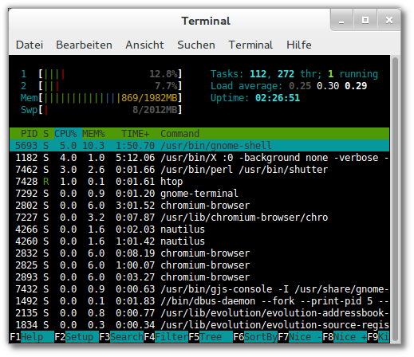

Einleitung
Linux ist ein Multitasking-Betriebssystem. Das bedeutet, es
können mehrere Prozesse parallel ablaufen.
Ein Prozess ist ein Programm, das sich in der Ausführung befindet. Der
Begriff wird für die Einheit aus ausführbarem Programm mit dem
zugehörigen Daten verwendet.
Dieser WebQuest dient als Einstieg in die Prozessverwaltung von Linux.
Sie werden grundlegende Kommandos erlernen, die sich als Administrator
zur Beeinflussung (z.B.das Beenden) von Prozessen benötigen.